Luis M. González
Con base en (Secretaría de Salud - DGIS, 2026-05-14)
| Nivel de atención: | SEGUNDO NIVEL |
| Tipología: | HOSPITAL GENERAL |
| Subtipología: | NO ESPECIFICADO |
| Tipo de establecimiento: | HOSPITALIZACIÓN |
| Estrato: | URBANO |
| Estatus: | FUERA DE OPERACIÓN |
| Región: | NOROESTE |
| Entidad: | SINALOA |
| Municipio: | SALVADOR ALVARADO |
| Localidad: | GUAMÚCHIL |
| Coordenadas: | 25.455796, -108.064143 |
| Domicilio: | CALLE JOSÉ MARÍA MORELOS ENTRE JOSÉ MARÍA VIGIL Y CARRETERA A MOCORITO No. SIN NÚMERO |
| CHUTAMONA | |
| GUAMÚCHIL, SIN | |
| CP 82910 | |
| Fecha de inicio de operación: | 2009-02-01 |
| Propiedad del inmueble: | None |
| Último movimiento: | BAJA |
| Fecha del último movimiento: | 2025-09-30 |
| Motivo de baja: | SE SUSTITUYE |
| Fecha efectiva de baja: | 2025-08-25 |
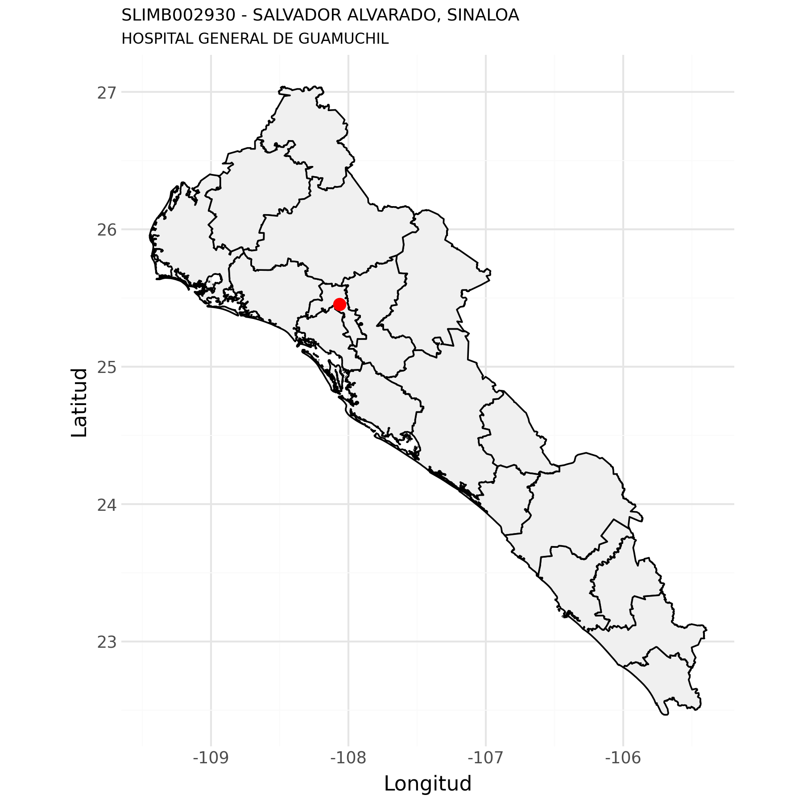
Con base en (Secretaría de Salud - DGIS, 2026-06-04a)
| clues | Año | Egresos |
|---|---|---|
| SLIMB002930 | 2021 | 1727 |
| SLIMB002930 | 2022 | 1920 |
| SLIMB002930 | 2023 | 2092 |
| SLIMB002930 | 2024 | 2094 |
| SLIMB002930 | 2025 | 1016 |
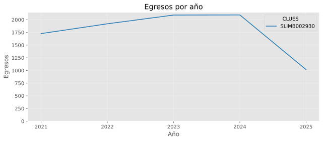
| Posición | Afección principal | Egresos |
|---|---|---|
| 1 | FIEBRE, NO ESPECIFICADA | 42 |
| 2 | PARTO ÚNICO ESPONTÁNEO, SIN OTRA ESPECIFICACIÓN | 37 |
| 3 | PARTO POR CESÁREA, SIN OTRA ESPECIFICACIÓN | 33 |
| 4 | OTROS DOLORES ABDOMINALES Y LOS NO ESPECIFICADOS | 29 |
| 5 | HERNIA INGUINAL UNILATERAL O NO ESPECIFICADA, SIN OBSTRUCCIÓN NI GANGRENA | 18 |
| 6 | QUISTE FOLICULAR DE LA PIEL Y DEL TEJIDO SUBCUTÁNEO, SIN OTRA ESPECIFICACIÓN | 17 |
| 7 | HIPERTENSIÓN ESENCIAL (PRIMARIA) | 16 |
| 8 | HIPERPLASIA DE LA PRÓSTATA | 14 |
| 9 | INFECCIÓN AGUDA NO ESPECIFICADA DE LAS VÍAS RESPIRATORIAS INFERIORES | 14 |
| 10 | NEUMONÍA, NO ESPECIFICADA | 12 |
| 11 | GASTROENTERITIS Y COLITIS DE ORIGEN NO ESPECIFICADO | 12 |
| 12 | DIABETES MELLITUS TIPO 2, CON COMPLICACIONES CIRCULATORIAS PERIFÉRICAS | 11 |
| 13 | TUMOR BENIGNO LIPOMATOSO DE PIEL Y DE TEJIDO SUBCUTÁNEO DEL TRONCO | 11 |
| 14 | BRONQUIOLITIS AGUDA, NO ESPECIFICADA | 10 |
| 15 | DOLOR ABDOMINAL LOCALIZADO EN PARTE SUPERIOR | 10 |
| 16 | PREPUCIO REDUNDANTE, FIMOSIS Y PARAFIMOSIS | 10 |
| 17 | ABORTO ESPONTÁNEO INCOMPLETO, SIN COMPLICACIÓN | 10 |
| 18 | DIABETES MELLITUS TIPO 2, SIN MENCIÓN DE COMPLICACIÓN | 10 |
| 19 | FRACTURA DE LA CLAVÍCULA | 10 |
| 20 | PARTO ÚNICO ESPONTÁNEO, PRESENTACIÓN CEFÁLICA DE VÉRTICE | 9 |
| 21 | OTROS | 681 |
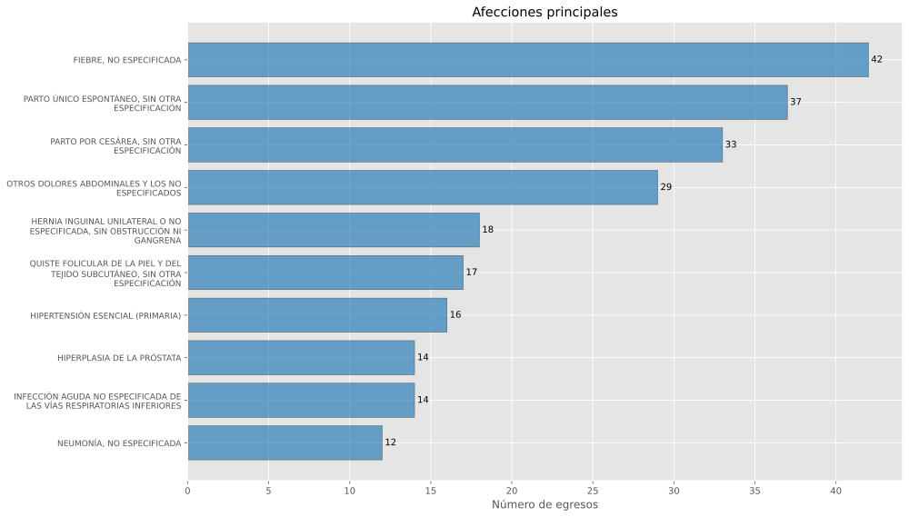
| Posición | Servicio de ingreso | Egresos |
|---|---|---|
| 1 | MEDICINA INTERNA | 285 |
| 2 | CIRUGÍA GENERAL | 181 |
| 3 | NO APLICA | 133 |
| 4 | TRAUMATOLOGÍA | 128 |
| 5 | PEDIATRÍA | 85 |
| 6 | OBSTETRICIA | 72 |
| 7 | UROLOGÍA | 49 |
| 8 | GINECOLOGÍA | 42 |
| 9 | GINECO OBSTETRICIA | 25 |
| 10 | CIRUGÍA GENERAL PEDIÁTRICA | 15 |
| 11 | OTROS | 1 |
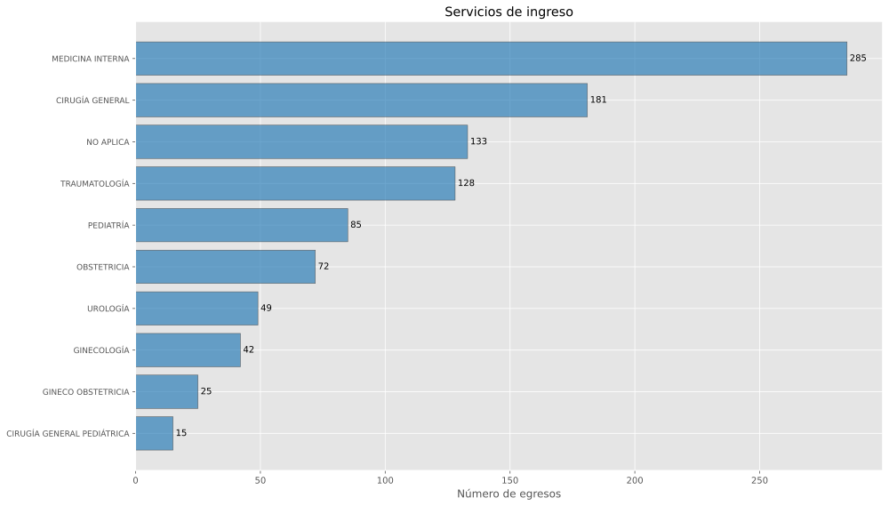
| Posición | Servicio de egreso | Egresos |
|---|---|---|
| 1 | MEDICINA INTERNA | 295 |
| 2 | CIRUGÍA GENERAL | 244 |
| 3 | TRAUMATOLOGÍA | 134 |
| 4 | PEDIATRÍA | 95 |
| 5 | OBSTETRICIA | 85 |
| 6 | UROLOGÍA | 59 |
| 7 | GINECOLOGÍA | 49 |
| 8 | GINECO OBSTETRICIA | 29 |
| 9 | CIRUGÍA GENERAL PEDIÁTRICA | 24 |
| 10 | ANGIOLOGÍA | 2 |
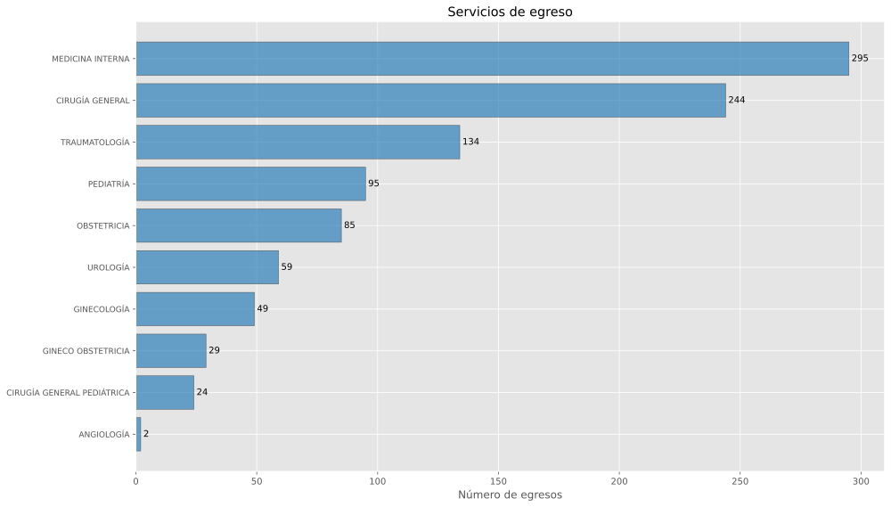
| Posición | Procedencia | Egresos |
|---|---|---|
| 1 | URGENCIAS | 994 |
| 2 | OTRO | 19 |
| 3 | REFERIDO | 2 |
| 4 | CUNERO PATOLÓGICO | 1 |
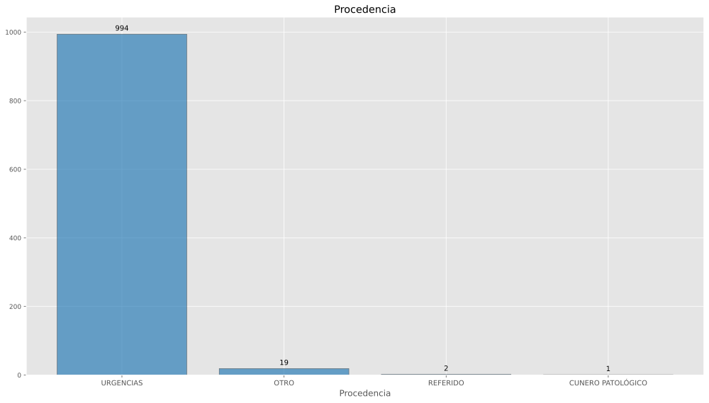
| Posición | Motivo de egreso | Egresos |
|---|---|---|
| 1 | MEJORÍA | 888 |
| 2 | TRASLADO A OTRA UNIDAD | 49 |
| 3 | VOLUNTARIO | 38 |
| 4 | DEFUNCIÓN | 31 |
| 5 | OTRO | 7 |
| 6 | FUGA | 3 |
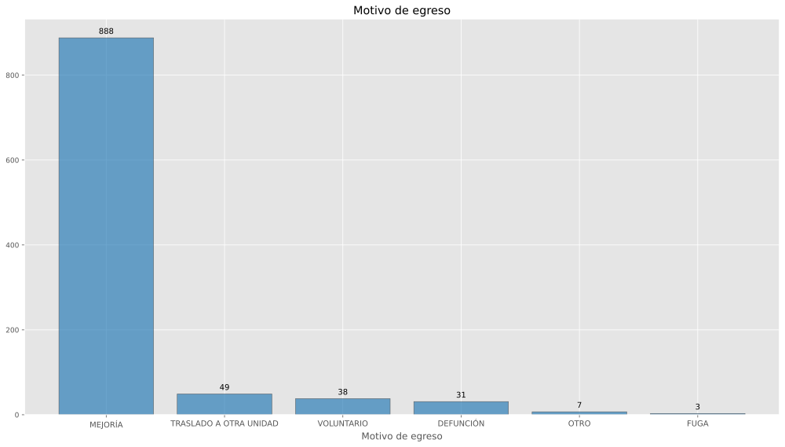
| Posición | Procedimiento quirúrgico | Egresos |
|---|---|---|
| 1 | OTRA DESTRUCCIÓN U OCLUSIÓN BILATERAL DE LAS TROMPAS DE FALOPIO | 28 |
| 2 | COLECISTECTOMÍA | 28 |
| 3 | OTRA APENDICECTOMÍA | 27 |
| 4 | CESÁREA CLÁSICA | 22 |
| 5 | REDUCCIÓN ABIERTA DE FRACTURA CON FIJACIÓN INTERNA. TIBIA Y PERONÉ | 21 |
| 6 | OTRA EXCISIÓN DE TEJIDO BLANDO | 20 |
| 7 | OTRA EXTIRPACIÓN LOCAL O DESTRUCCIÓN DE LESIÓN O TEJIDO DE PIEL Y TEJIDO SUBCUTÁNEO | 18 |
| 8 | REDUCCIÓN ABIERTA DE FRACTURA CON FIJACIÓN INTERNA. RADIO Y CÚBITO | 18 |
| 9 | OTRA DILATACIÓN Y LEGRADO | 16 |
| 10 | LAPAROTOMÍA EXPLORADORA | 16 |
| 11 | DESBRIDAMIENTO NO EXCISIONAL DE HERIDA, INFECCIÓN O QUEMADURA | 14 |
| 12 | REDUCCIÓN ABIERTA DE FRACTURA CON FIJACIÓN INTERNA. FÉMUR | 13 |
| 13 | COLECISTECTOMÍA LAPAROSCÓPICA | 13 |
| 14 | OTRA CESÁREA DE TIPO NO ESPECIFICADO | 13 |
| 15 | REPARACIÓN ABIERTA Y OTRA REPARACIÓN DE HERNIA INGUINAL INDIRECTA CON INJERTO O PRÓTESIS | 13 |
| 16 | CIRCUNCISIÓN | 10 |
| 17 | REDUCCIÓN ABIERTA DE FRACTURA CON FIJACIÓN INTERNA. OTROS HUESOS ESPECÍFICOS | 9 |
| 18 | OTRA PROSTATECTOMÍA TRANSURETRAL | 9 |
| 19 | OTRA HERNIORRAFIA UMBILICAL ABIERTA | 8 |
| 20 | DILATACIÓN Y LEGRADO DESPUÉS DE PARTO O ABORTO | 8 |
| 21 | OTROS | 209 |
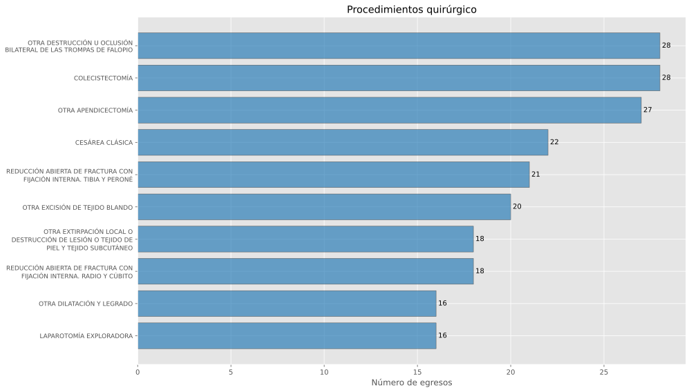
| Posición | Procedimiento terapéutico | Egresos |
|---|---|---|
| 1 | OTRA TRANSFUSIÓN DE SANGRE ENTERA | 51 |
| 2 | INSERCIÓN DE DISPOSITIVO ANTICONCEPTIVO INTRAUTERINO | 34 |
| 3 | OTRO ULTRASONIDO TERAPÉUTICO | 4 |
| 4 | CURACIÓN DE HERIDA | 2 |
| 5 | LAVADO GÁSTRICO | 2 |
| 6 | EXTRACCIÓN DE TUBO DE URETEROSTOMÍA Y DE CATÉTER URETERAL | 1 |
| 7 | EXTRACCIÓN DE CUERPO EXTRAÑO, NO ESPECIFICADO DE OTRA MANERA | 1 |
| 8 | EXTRACCIÓN DE DISPOSITIVO ANTICONCEPTIVO INTRAUTERINO | 1 |
| 9 | ULTRASONIDO TERAPEÚTICO | 1 |
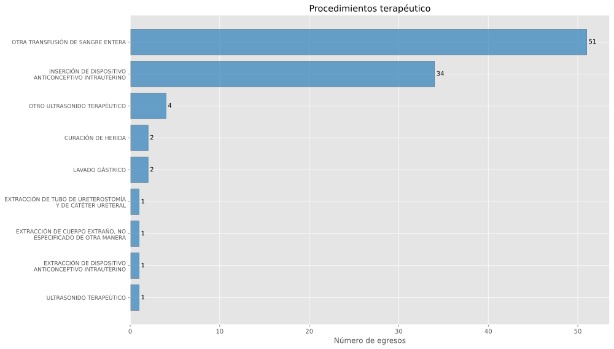
| Posición | Procedimiento de diagnóstico | Egresos |
|---|---|---|
| 1 | EXAMEN MICROSCÓPICO DE SANGRE. OTRO EXAMEN MICROSCÓPICO | 467 |
| 2 | RADIOGRAFÍA TORÁCICA RUTINARIA, DESCRITA COMO TAL | 180 |
| 3 | TOMOGRAFÍA AXIAL COMPUTARIZADA DEL TÓRAX | 70 |
| 4 | OTRAS RADIOGRAFÍAS DE ABDOMEN | 36 |
| 5 | ULTRASONOGRAFÍA DIAGNÓSTICA DEL APARATO URINARIO | 28 |
| 6 | EXAMEN MICROSCÓPICO DE MUESTRA DE VEJIGA, URETRA, PRÓSTATA, VESÍCULA SEMINAL, TEJIDO PERIVESICAL Y DE ORINA Y DE SEMEN. OTRO EXAMEN MICROSCÓPICO | 27 |
| 7 | RADIOGRAFÍA ÓSEA DEL MUSLO, LA RODILLA Y LA PIERNA INFERIOR | 26 |
| 8 | TOMOGRAFÍA AXIAL COMPUTARIZADA DE CABEZA | 24 |
| 9 | RADIOGRAFÍA ÓSEA DEL CODO Y EL ANTEBRAZO | 16 |
| 10 | ULTRASONOGRAFIA DIAGNÓSTICA DEL ABDOMEN Y EL RETROPERITONEO | 13 |
| 11 | RADIOGRAFÍA ÓSEA DE LA MUÑECA Y LA MANO | 11 |
| 12 | RADIOGRAFÍA DE LAS COSTILLAS, ESTERNÓN Y CLAVÍCULA | 7 |
| 13 | OTRAS RADIOGRAFÍAS DE CRÁNEO | 7 |
| 14 | OTRA RADIOGRAFÍA ÓSEA DE LA PELVIS Y CADERAS | 5 |
| 15 | RADIOGRAFÍA ÓSEA DEL HOMBRO Y EL BRAZO SUPERIOR | 5 |
| 16 | BIOPSIA DE PIEL Y TEJIDO SUBCUTÁNEO | 5 |
| 17 | ELECTROCARDIOGRAMA | 4 |
| 18 | OTRAS RADIOGRAFÍAS DE COLUMNA LUMBOSACRA | 3 |
| 19 | OTROS PROCEDIMIENTOS DIAGNÓSTICOS SOBRE PIEL Y TEJIDO SUBCUTÁNEO | 3 |
| 20 | OTROS PROCEDIMIENTOS DIAGNÓSTICOS SOBRE NERVIOS O GANGLIOS SIMPÁTICOS | 2 |
| 21 | OTROS | 12 |
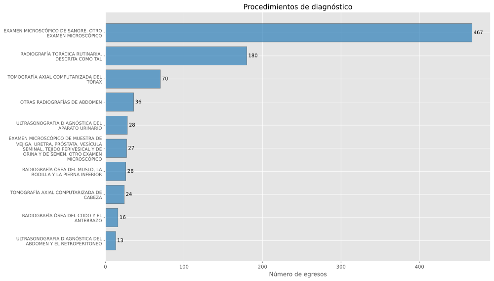
Con base en (Secretaría de Salud - DGIS, 2026-06-04b)
| clues | Año | Urgencias |
|---|---|---|
| SLIMB002930 | 2023 | 12044 |
| SLIMB002930 | 2024 | 13096 |
| SLIMB002930 | 2025 | 7013 |
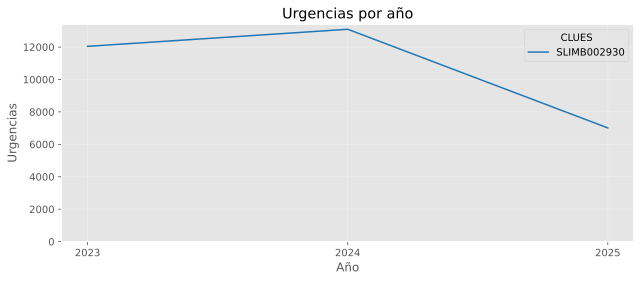
| Posición | Afección principal | Urgencias |
|---|---|---|
| 1 | DOLOR, NO ESPECIFICADO | 495 |
| 2 | RINOFARINGITIS AGUDA [RESFRIADO COMÚN] | 373 |
| 3 | OTROS DOLORES ABDOMINALES Y LOS NO ESPECIFICADOS | 286 |
| 4 | FIEBRE, NO ESPECIFICADA | 275 |
| 5 | NÁUSEA Y VÓMITO | 257 |
| 6 | EMBARAZO CONFIRMADO | 235 |
| 7 | HIPERTENSIÓN ESENCIAL (PRIMARIA) | 187 |
| 8 | GASTROENTERITIS Y COLITIS DE ORIGEN NO ESPECIFICADO | 178 |
| 9 | CEFALEA | 159 |
| 10 | TRAUMATISMOS SUPERFICIALES MÚLTIPLES, NO ESPECIFICADOS | 153 |
| 11 | EFECTO TÓXICO DEL VENENO DE ESCORPIÓN | 136 |
| 12 | DOLOR AGUDO | 117 |
| 13 | SUPERVISIÓN DE OTROS EMBARAZOS NORMALES | 91 |
| 14 | CONSULTA, NO ESPECIFICADA | 87 |
| 15 | DOLOR ABDOMINAL LOCALIZADO EN PARTE SUPERIOR | 80 |
| 16 | EFECTO TÓXICO DEL VENENO DE OTROS ARTRÓPODOS | 76 |
| 17 | DOLOR LOCALIZADO EN OTRAS PARTES INFERIORES DEL ABDOMEN | 74 |
| 18 | ALERGIA NO ESPECIFICADA | 73 |
| 19 | SUPERVISIÓN DE PRIMER EMBARAZO NORMAL | 67 |
| 20 | CÓLICO RENAL, NO ESPECIFICADO | 58 |
| 21 | OTROS | 3556 |
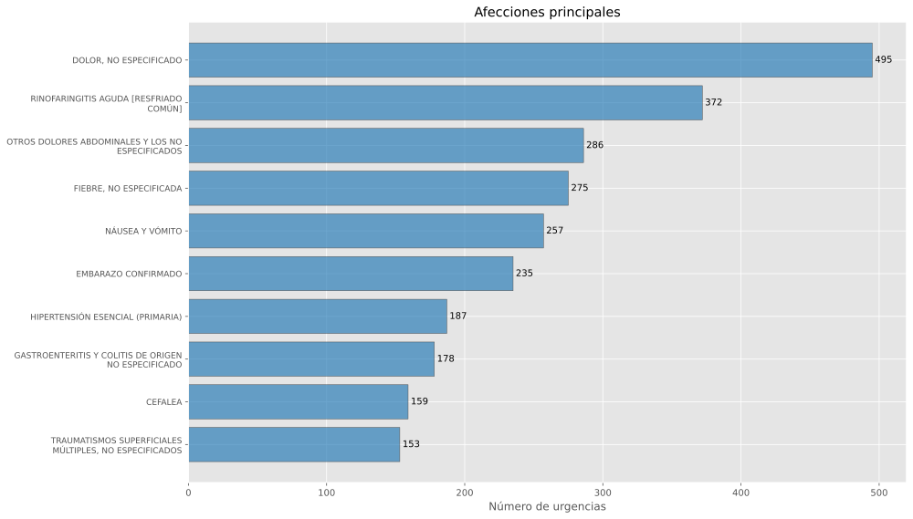
| Posición | Motivo de urgencia | Urgencias |
|---|---|---|
| 1 | MÉDICA | 4724 |
| 2 | PEDIÁTRICA | 1848 |
| 3 | GINECO-OBSTÉTRICA | 441 |
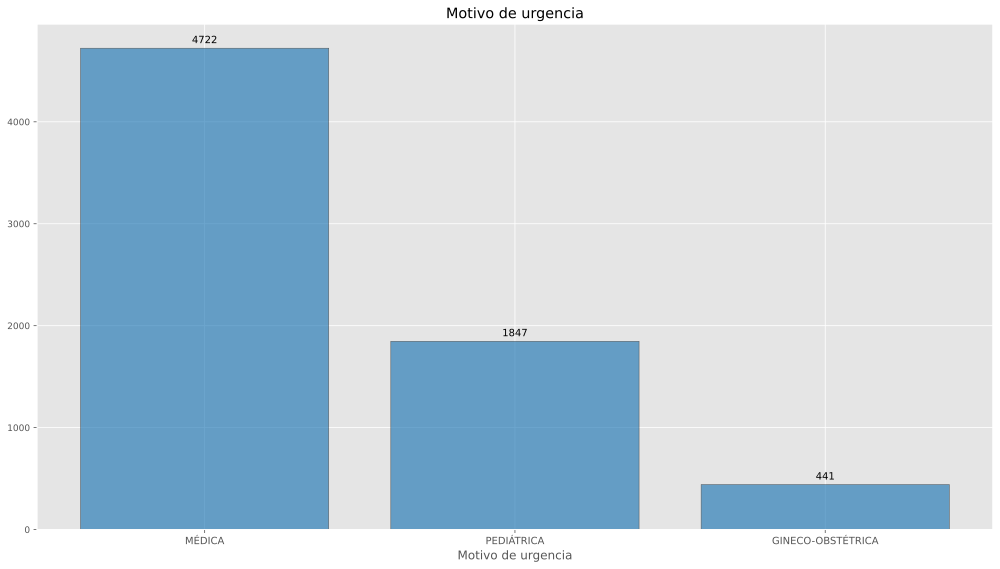
| Posición | Tipo de urgencia | Urgencias |
|---|---|---|
| 1 | URGENCIA NO CALIFICADA | 4040 |
| 2 | URGENCIA CALIFICADA | 2973 |
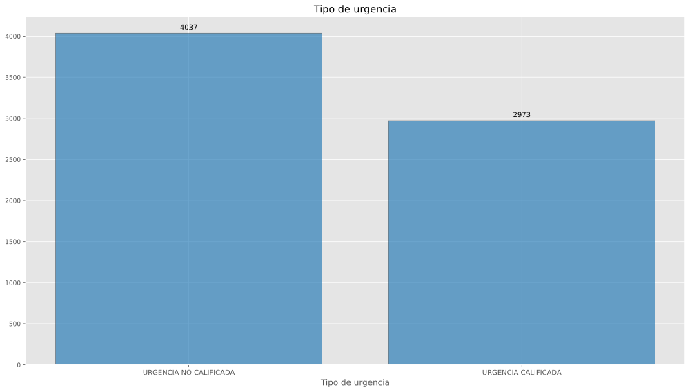
| Posición | Tipo de cama | Urgencias |
|---|---|---|
| 1 | SIN CAMA | 5616 |
| 2 | CAMA DE OBSERVACION | 1393 |
| 3 | CAMA DE CHOQUE | 2 |
| 4 | NO ESPECIFICADO | 2 |
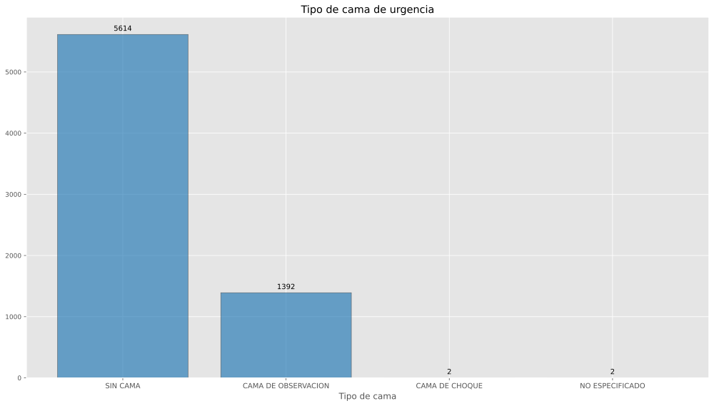
| Posición | Enviado a | Urgencias |
|---|---|---|
| 1 | CONSULTA EXTERNA | 5810 |
| 2 | HOSPITALIZACIÓN | 1011 |
| 3 | TRASLADO A OTRA UNIDAD | 186 |
| 4 | DOMICILIO | 4 |
| 5 | SALE POR FUGA | 2 |
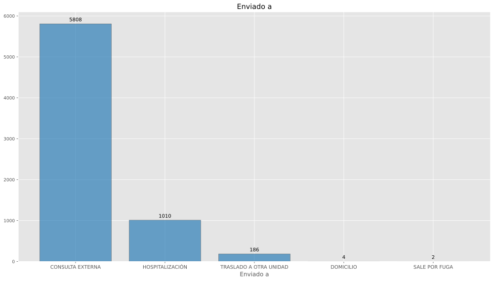
| Posición | Procedimiento quirúrgico | Urgencias |
|---|---|---|
| 1 | INSERCIÓN ENDOSCÓPICA DE TUBO TUTOR (STENT) EN CONDUCTO BILIAR | 1 |
| 2 | CONTROL DE EPISTAXIS POR LIGADURA DE LA ARTERIA CARÓTIDA EXTERNA | 1 |
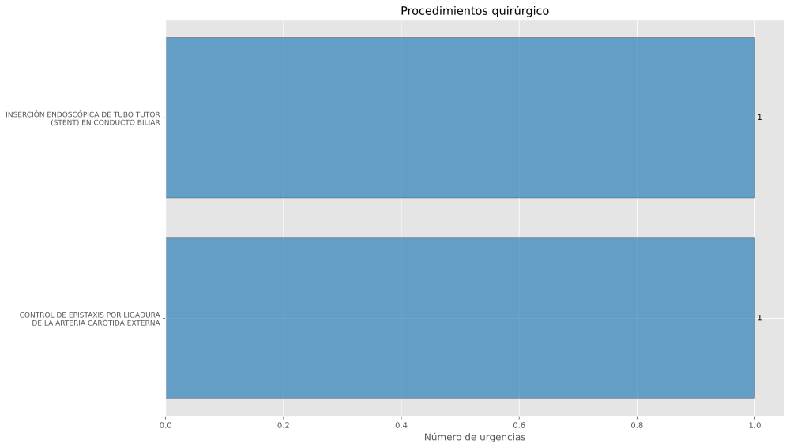
Descargar SLIMB002930.pdf